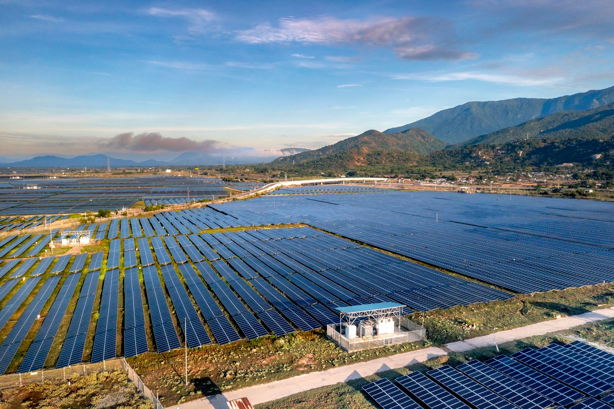

Das Jahr 2025 brachte einen weiteren Rekord beim Ausbau erneuerbarer Energien. Laut IRENA stieg die weltweite EE-Leistung um 692 GW, wobei Photovoltaik fast drei Viertel des Zubaus ausmachte. Parallel verzeichnete die IEA 108 GW neu installierte Batteriespeicher – 40 Prozent mehr als im Vorjahr.

1. Weltweit kamen 692 GW erneuerbare Leistung hinzu
Nach Angaben der IRENA erreichte die weltweite Leistung erneuerbarer Energien Ende 2025 insgesamt 5.149 GW. Der Jahreszuwachs von 692 GW entsprach einem Wachstum von 15,5 Prozent. Das war ein Rekord, die Entwicklung verlief zwischen den Regionen jedoch weiterhin ungleich.
2. Solarenergie stellte fast 75 Prozent des neuen EE-Zubaus
Die Solarleistung wuchs um rund 511 GW. Photovoltaik war damit der wichtigste Treiber neuer erneuerbarer Leistung. Zusammen mit Windenergie machte sie 96,8 Prozent des gesamten EE-Leistungszuwachses aus.
3. Neue Batteriespeicher erreichten 108 GW
Die IEA schätzte, dass 2025 weltweit 108 GW neue Batteriespeicher in Betrieb gingen – 40 Prozent mehr als im Vorjahr. Die gesamte installierte Leistung war etwa elfmal so hoch wie 2021.
Rund 80 Prozent des Zubaus entfielen auf große netzgekoppelte Systeme. Diese Unterscheidung ist wichtig: Der weltweite Batterierekord bedeutet nicht, dass der größte Teil des Wachstums aus Hausspeichern kam.
4. LFP-Technologie dominiert neue Anlagen
Laut IEA nutzten rund 90 Prozent der neuen Batteriesysteme Lithium-Eisenphosphat-Technologie (LFP). Ihre Verbreitung beruht auf der Kombination aus Kosten, Lebensdauer und Nutzungseigenschaften. China stellte 2025 rund 60 Prozent der neu installierten Batteriespeicher.
5. Photovoltaik könnte Windenergie bereits 2026 überholen
In ihrer Halbjahresprognose 2026 erwartete die IEA, dass Photovoltaik die Windenergie überholt und nach Wasserkraft zur zweitgrößten erneuerbaren Stromquelle wird. Die Agentur prognostizierte außerdem, dass erneuerbare Energien 2026 die Kohle bei der weltweiten Stromerzeugung übertreffen könnten.
Der globale Trend ist klar: Solarstromerzeugung und Flexibilitätsbedarf wachsen gleichzeitig. Im Wohnhaus muss das System dennoch zum lokalen Verbrauch passen – nicht zum Weltrekord.
Was bedeuten die Rekorde für Investoren in Polen?
Die wachsende Marktgröße fördert die technische Entwicklung, entscheidet aber nicht über die Wirtschaftlichkeit einer konkreten Anlage. Für Wohnhäuser und Unternehmen bleiben entscheidend:
- eine PV-Leistung, die zu Verbrauch und Montagebedingungen passt,
- die Kompatibilität von Wechselrichter, Batterie und Energiemanagement,
- das tatsächliche Speicherziel: Eigenverbrauch, Tarife oder Backup,
- eine sichere Elektroplanung und verfügbarer Service,
- der Vergleich von Varianten auf denselben Annahmen.
Die weltweiten Daten zeigen die Richtung. Ein gutes Projekt beginnt aber weiterhin mit Stromrechnungen und dem Lastprofil des konkreten Gebäudes.
Quellen
- IRENA: Near 700 GW Surge in 2025 Proves Renewable Energy Resilience, 1. April 2026
- IEA: Global Energy Review 2026 – Battery storage, 20. April 2026
- IEA: Electricity Mid-Year Update 2026 – Executive summary
Informationsstand: 27. Juli 2026. Die Daten stammen aus verschiedenen Berichten und können unterschiedliche Leistungsbegriffe und Technologieabgrenzungen verwenden.